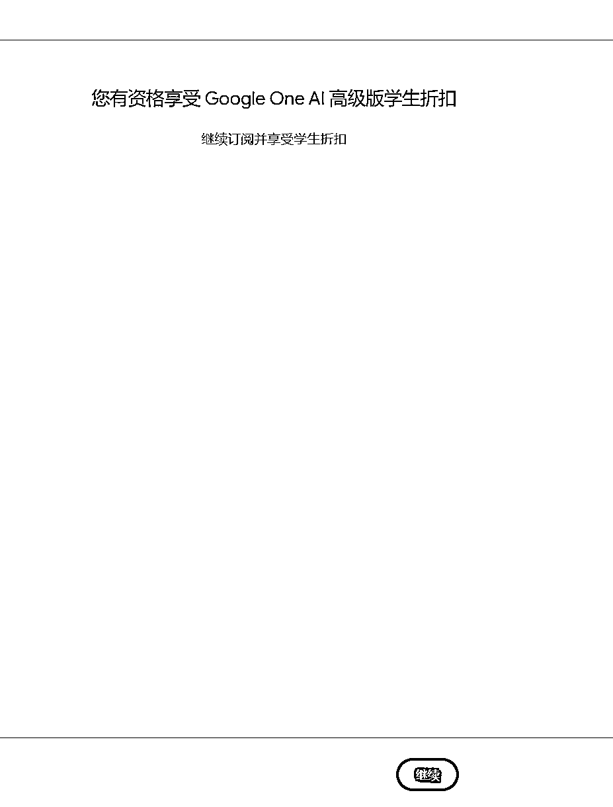
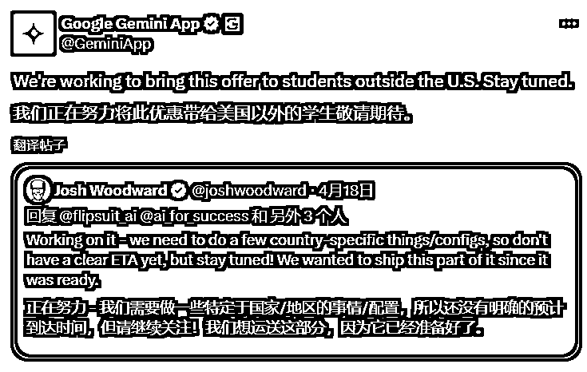

来源：https://ox9k4rncex0.feishu.cn/docx/IOnodxtsloe2fExbNMXcLfB1nwb
大家好，我是彻易Heawcyrt。
04 年大学生，全网万粉博主，大二实现经济独立，自由职业搞钱玩家，
欢迎同频的前辈、朋友交流研讨。
背景信息： Google Gemini 是谷歌开发的人工智能大模型。其付费的高级版本 Gemini Advanced，允许用户使用更强大的 AI 模型（如 Gemini 2.5 Pro ），旨在提供更优的性能、更高质量的回答。
常规价格： Gemini Advanced 的标准订阅费用为 $20 美元/月。
当前优惠： 目前，谷歌面向美国学生推出了一项特别优惠，通过教育邮箱认证流程后，可获得 15 个月 的 Gemini Advanced 免费订阅权。
相当于只要搞定美国学校的教育邮箱，就省下了 $300，爽用 15 个月！
本教程所有外部网址，默认使用魔法🧙♂️来打开。
https://gemini.google/students/
首先，我们必须得有一个 Google 账号才能够去使用 Gemini
如果你已经有了一个 Google 账号，那么可以直接跳转往后看👇
如果你没有拥有，下面我会带着你手把手注册。
| 步骤 | 说明 |
|---|---|
| 访问注册页面 | 打开 Google 官网，点击“创建账号”，或者直接点击👉 https://accounts.google.com/signup |
| 填写信息 | 输入姓名、用户名、密码 |
| 手机号验证 | 输入手机号，接收短信验证码 |
| 备用邮箱及信息 | 填写备用邮箱、生日、性别等 |
| 同意条款 | 同意谷歌服务条款 |
| 完成注册 | 注册成功，自动登录 |
如果需要手机号，且使用自身中国手机号没法搞定的朋友，可以联系生财鱼丸要我的联系方式，我会教你怎么做（在这里说可能会敏感）
注册完以后点击👉 https://myaccount.google.com/
然后我们点击「个人信息」，接着找到「地址」，点击「其他」
我们在这里面随便添加一下地址，不知道添加什么地址就可以添加我们后续注册的「支付卡」的地址。
同时这个时候，我们可以登录下 Gemini 的官网👉 https://gemini.google.com
我们需要一个国外的支付卡，国内银行卡不行。然而远程申请国外支付卡对于大多数国内的朋友来说又太过麻烦，这里我会教大家如何去申请一张国外的虚拟支付卡，不能用来转账购物，但可以用来充值各大热门应用的会员，比如推特、GPT、Claude、Netflix…
有国外支付卡的朋友们可以跳转下一章节：
👉
点击链接跳转官网👉 https://yeka.ai/i/XABST3JL
（用我的邀请链接可以便宜 1 刀）
我们可以很简单注册一个账号，然后在里面选择开卡。
这个大家随心选就好，我选了 1 年，因为 2 年合开也只比单开 2 年便宜了 5 刀，不到 40，现在时代发展这么快，或许一年后会有更好的选择，所以我只开了 1 年，后续好用接着开。
开通时，会让你填姓名，最好保证和咱们之前 Google 账号时填写的姓名一致。
开卡完毕后，我们要先往这个卡里充值最低金额的 5 美元，因为虽然教育优惠是免费的，但同样需要支付 0 美元，所以卡里需要保证有一定金额。（这里一定一定要充值，确保卡里有钱，不然后续会出错。）
如果你不是美国大学的，那没办法，只能买，大多数朋友会选择闲鱼、淘宝，闲鱼目前有两种邮箱。
理论上无脑选择低价就行，但是我们先前提到过，这次教育优惠下一学年开始之前会重新验证身份，也就是大概8月底的时候会要二次验证。低价的如果运气不好，用完就被回收，那就相当于只能用3-4个月。
所以具体情况就变成了——
我是找到了一个专门卖邮箱的网站，且我在互联网查到关于他们的数据最早能早到16、17年，他们是和美国一个职业大学合作，成为了代理商，专门做卖邮箱这个业务的，所以我选择相信他们，买了一个 140 元的邮箱，目前一切顺利，他们非常笃定说是永久邮箱且永久售后。
他们家还有其他不同类型的邮箱，也有便宜的，但这里不做推荐和担保，感兴趣的可以自行判断：
我买的产品👉 https://edumark.net/632.html?aff=899
他们家官网👉 https://edumark.net/?aff=899
以上，我们就做好了申请 Gemini 教育优惠前的全部准备了。
下面正式申请，全程使用魔法🧙♂️，节点一定选择「美国」！
👉 https://one.google.com/explore-plan/ai-premium-student
点击「验证学生身份」
这里我们填写购买的 edu 教育邮箱。
邮箱里收到验证码后返回去填写，然后即可解锁资格。

如果出现提示：此账号不符合使用 Google One AI 高级版方案的条件。请一定检查节点问题，可能是由于节点不够纯净导致，建议换个「美国」节点重新尝试下。
我强烈建议大家一定要去薅这波羊毛，体验过 Gemini 2.5 Pro 你就知道多好用了。
全程下来花的钱总计是：80（开通野卡） + 140（edu邮箱） = 220
这个价格其实也就是普遍国外 AI 两个月的会员，而且开通野卡以后，可以充值其他国外的APP；拥有了美国edu邮箱以后，也能再去薅其他产品的羊毛。
当然，如果你实在想当等等党，这里也有一则好消息！
Google Gemini 官方通知，会在未来开通其他国家/地区的教育优惠！

美国的教育邮箱其实算是市场上最贵的那一批，如果真的等到 Gemini 开通了其他地区的教育优惠，价格肯定会被打下来；当然，大概率是没办法开通中国地区的教育优惠了。
如果觉得又是开通虚拟卡，又是买邮箱什么的，很麻烦很贵，那可以等到政策放开后去买低价成品号。
但是从我本心来说，我真的真的真的劝大家赶紧薅！！！
因为 220 人民币真的真的很便宜了！真没必要等！
买成品号不如自己的号，Gemini 有记忆功能，用久了他可以结合过往的聊天记录来回答你。
而且，前几天大火的 Lenny's newsletter，就是那个教育优惠 100 刀送你一堆年度会员的产品；
最开始好多人冲着 cursor 的年会员去，现在呢？
才一天，Lenny 的大礼包 Cursor 就已经被薅光了。
以上是我通过 Gemini 的 Deep Research 功能，调研出的能用教育优惠的产品合集。实测下来绝大多数都是属实的。